The creators of the beloved Toy Story films re-open the toy box and bring moviegoers back to the delightful world of our favorite gang of toy characters in Toy Story 3. As Andy prepares to depart for college, Buzz, Woody, and the rest of his loyal toys are troubled about their uncertain future.
Toy Story 3 is a comical adventure that lands the toys in a room full of untamed tots who can't wait to get their sticky little fingers on these "new" toys. It's pandemonium as the toys try to stay together, ensuring that "no toy gets
left behind."
Woody is a cowboy sheriff who proclaims his signature catchphrases from the 1950s TV show Woody’s Roundup every time his pull-string is pulled. He’s always been Andy’s favorite toy. Even though his owner is now grown, the loyal sheriff Woody maintains a steadfast belief that Andy still cares about his toys.


Buzz Lightyear is a heroic space ranger action figure, complete with laser beam, karate-chop action, and pop-out wings. Buzz is a boy’s dream toy who becomes a quick favorite of young Andy and the closest of buddies with Woody. While Buzz’s sole mission used to be defeating the evil Emperor Zurg, what he now cares about most is keeping his toy family. Buzz’s new mission is sidetracked along the way.
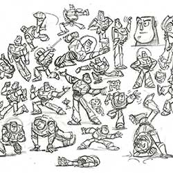


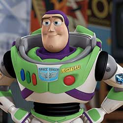
Lotso is a jumbo, extra-soft teddy bear with a pink and white plush body and a velvety purple nose. This lovable bear ranks fuzzy heads and shoulders above other teddy bears because he smells like sweet strawberries. With a smile that will light up your child’s face and a belly just asking to be hugged, Lotso Bear is sure to become a bedtime necessity. Stain resistant. Spot clean plush surface with a damp cloth.
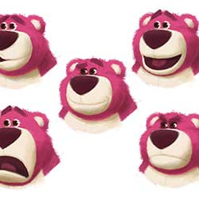

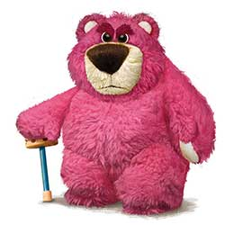
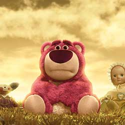
Created to be loved by generations, Andy’s toys have features that feed imaginations: the beautiful stitching on Jessie and Bullseye can survive the roughest of play; the durable pieces of Mr. and Mrs. Potato Head® offer endless combinations; the tireless spring of Slinky® Dog keeps his stretch; the pose-able limbs of Rex give him different looks; Hamm holds an appetite for saving; and the collectible Aliens emit mysterious calls.
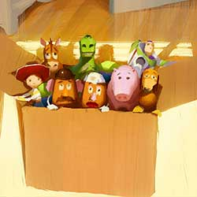
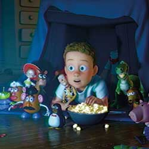
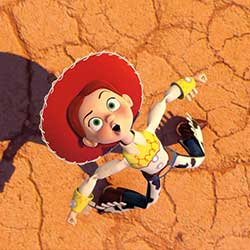
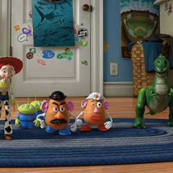
Andy—Buzz and Woody’s kind, imaginative young owner—is now nearly 18 years old and just days away from heading to college. His bedroom walls, once covered with Buzz Lightyear posters, are now plastered with images of sports cars, rock bands, and skateboarders. Although Andy no longer brings his old toys out from the chest for playtime, he hasn’t been able to bring himself to get rid of them.


Bonnie is a 4-year-old girl who goes to Sunnyside Daycare. Although shy when around many adults, she is full of energy and creativity. She likes her pink tutu with yellow boots and a blue backpack. She's filled with imagination that helps her create endless new games and scenarios with her toys. She can never have too many toys because those that she has will always be loved, well cared for, and—best of all—played with.
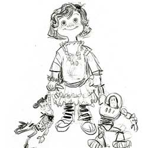
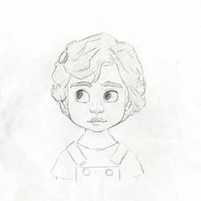
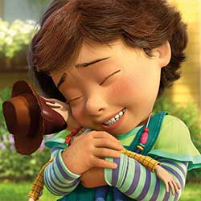
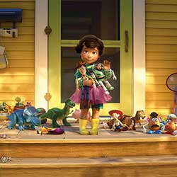
From the beginning, the filmmakers had wanted a Western-themed opening for Toy Story 3. Taking a visual cue from the original wallpaper in Andy’s bedroom, the big blue sky provided the canopy for Woody’s heroic runaway train rescue set in the desert Southwest. But for the third cinematic Toy Story opening sequence, the Pixar team took the action majestically over the top with spaceships, dinosaurs, and a memorable Death by Monkeys finale.
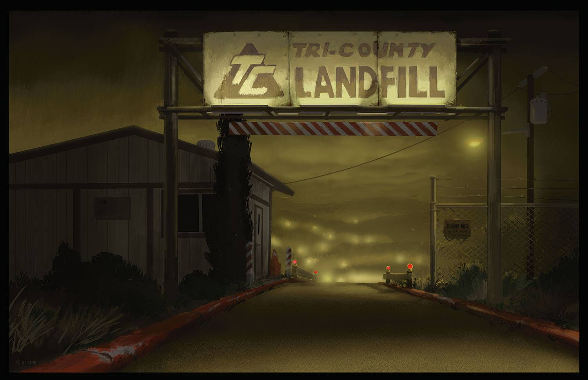
The choice of a landfill for the climactic sequence fit director Lee Unkrich’s notion of Toy Story as a life-cycle trilogy. For the characters, the dump would be the equivalent of Dante’s Inferno: a grim, dehumanized landscape and final destination. Pixar artists studied real dumps to emulate, but they also heightened the elements to maximize the drama.
According to Lighting Art Director, Dice Tsutsumi, “The dump is the one scene out of all the Toy Story films that needs to feel absolutely real, believable, and scary.”
By now Andy’s room has become an emblem of the Toy Story movies and of Pixar itself. The idyllic blue sky and white cloud wallpaper of Toy Story gives way to a galaxy of stars in Toy Story 2. For Toy Story 3, the artifacts on the walls, and even the more subdued sunlight streaming into the room, conveyed the realm of a teenager and the new problem facing the toys: Andy’s imminent departure for college.
Bonnie’s room presented a major challenge for the Pixar team. They needed the audience to immediately like the new little girl character and relate to her own collection of toys. Bonnie’s room had to be viewed as a place of safety and imagination, where toys are cherished, respected, and played with. And they had to do all this without giving away the ending. While critical story elements would take place in Bonnie’s room, it had to be treated as a speed bump in Woody’s journey home.
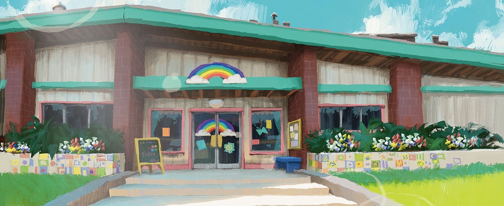
Sunnyside Daycare had to play two crucial roles in the film: a warm and welcoming environment one minute, an oppressive prison lockdown the next. Either way, the Pixar artists had to make Sunnyside always appear as a credible day care center. The crews took field trips to various child-care facilities in the Bay Area where they identified patterns in the organization and structure of bins. It also proved valuable in getting the child’s perspective. “Being there is great," said Production Designer Bob Pauley, "because you notice, wow…that chair’s tiny. Those toilets are tiny.”
For authenticity and inspiration, the Pixar team engaged in several field trips. With much of the film taking place at Sunnyside, the filmmakers toured multiple day care centers. Figuring that a day care center might feel like prison to a toy, they also took an outing to Alcatraz.
The Pixar team also spent hours scouring the local dump for angles. “The Ratatouille artists went to Paris. The Paris of Toy Story 3 is the dump. The Ratatouille crew got a better deal,” said Production Designer Bob Pauley.
A colorscript is a sequence of small pastel drawings or paintings used to emphasize color in each scene and establish a film's
visual language.
“I embrace what John and everybody else had done for Toy Story and Toy Story 2 because both films are fantastic. As I studied the earlier movies, I found that so many elements of the art direction had a lot of thinking behind them. Those visuals aren’t the result of intuitive or arbitrary choices: the artists were thinking about how to best support the story,” said Art Director
Daisuke “Dice” Tsutsumi.
DIRECTED BY LEE UNKRICH
PRODUCED BY DARLA K. ANDERSON
EXECUTIVE PRODUCER JOHN LASSETER
ASSOCIATE PRODUCER NICOLE PARADIS GRINDLE
STORY BY JOHN LASSETER, ANDREW STANTON, AND LEE UNKRICH
SCREENPLAY BY MICHAEL ARNDT
MUSIC COMPOSED AND CONDUCTED BY RANDY NEWMAN
STORY SUPERVISOR JASON KATZ
FILM EDITOR KEN SCHRETZMANN
PRODUCTION DESIGNER BOB PAULEY
SUPERVISING TECHNICAL DIRECTOR GUIDO QUARONI
PRODUCTION MANAGER MICHAEL WARCH
SUPERVISING ANIMATORS BOBBY PODESTA, MICHAEL VENTURINI
DIRECTOR OF PHOTOGRAPHY-CAMERA JEREMY LASKY
DIRECTOR OF PHOTOGRAPHY-LIGHTING KIM WHITE
CHARACTER SUPERVISOR SANJAY BAKSHI, BRIAN GREEN
SETS SUPERVISOR DAVID EISENMANN
SIMULATION & EFFECTS SUPERVISOR MICHAEL FONG
GLOBAL TECH SUPERVISOR WILLIAM REEVES
ART DIRECTION DAISUKE "DICE" TSUTSUMI
CHARACTER ART DIRECTOR DANIEL ARRIAGA
SETS ART DIRECTION ROBERT KONDO
SHADING ART DIRECTION BELINDA VAN VALKENBURG
SOUND DESIGNER TOM MYERS
EXECUTIVE MUSIC PRODUCER CHRIS MONTAN
MUSIC SUPERVISOR TOM MACDOUGALL
POST PRODUCTION SUPERVISOR PAUL CICHOCKI
PRODUCTION FINANCE LEADS BEATRICE DE LUCA, MARC S. GREENBERG
CASTING BY
KEVIN REHER, C.S.A.
NATALIE LYON, C.S.A.
WOODY TOM HANKS
BUZZ LIGHTYEAR TIM ALLEN
JESSIE JOAN CUSACK
LOTSO NED BEATTY
MR. POTATO HEAD DON RICKLES
KEN MICHAEL KEATON
REX WALLACE SHAWN
HAMM JOHN RATZENBERGER
MRS. POTATO HEAD ESTELLE HARRIS
ANDY JOHN MORRIS
BONNIE EMILY HAHN
BARBIE JODI BENSON
SLINKY DOG BLAKE CLARK